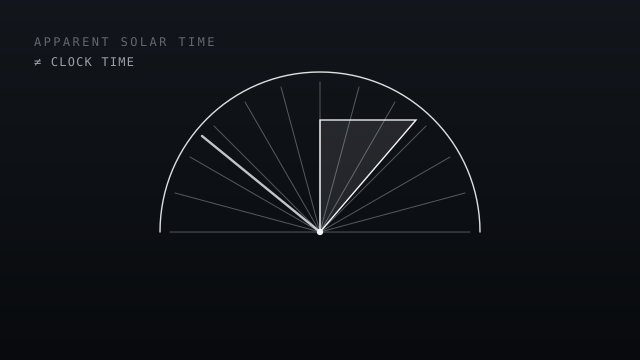

Mateo Mamaladze
I build hardware and software in Munich.
At the moment, mostly OpenPulse.
I'm 17 and in my final year at the Maria-Theresia-Gymnasium in Munich. I build things, usually because something I wanted to use was closed, missing, or only available to people with better equipment than mine. Right now most of my time goes into OpenPulse, a modular biosensor platform where the raw data stays with the person wearing it. It won first place for Europe at the Blue Ocean competition this year and a category win at STARTUP TEENS. Before that I built a VR chemistry lab, started teaching the robotics course at my school, published 3D models that strangers have downloaded more than ten thousand times, and spent two years buying and selling vintage watches.

A wearable biosensor platform with swappable sensor modules and no locked data.
First place for Europe · Blue Ocean 2026 Read the case study →A chemistry and physics lab for the Meta Quest 3 that you can walk around inside. Built with two friends, taken to the Bavarian state round of Jugend forscht.
Read the case study →A rover for volcanic terrain, with wheels that change diameter as the ground changes. Built for the German Aerospace Center's Vulcano challenge.
Read the case study →Since 2024 I've taught a group of students to build and program a humanoid robot. When the robot turned out to be free only two afternoons a week, I wrote a simulator so they could keep working without it.
Read the case study →
A wearable sundial I made by hand as a leaving present, and the tool that tells it what time it actually is.
Read the case study →
Designs I've been publishing since I was thirteen. Around 10,500 downloads and 2,800 likes across Printables and Thangs.
Read the case study →In most of them the limitation turned out to be structural rather than personal. The robot in our course was only free two afternoons a week, so I wrote a simulator and the students could work anyway. A sundial is wrong by a different amount every week, so instead of building a more accurate one I wrote the correction. Every fitness tracker I could buy kept its raw signal behind a subscription, so we built one that doesn't.
I usually find the constraint more interesting than the result, and whatever I build to get around one tends to end up useful to everyone else stuck behind the same thing.
Thanks for reading.
If any of this is useful to you — a project, a place, a question — I'd like to hear from you.
mateo.mamaladze@gmail.com